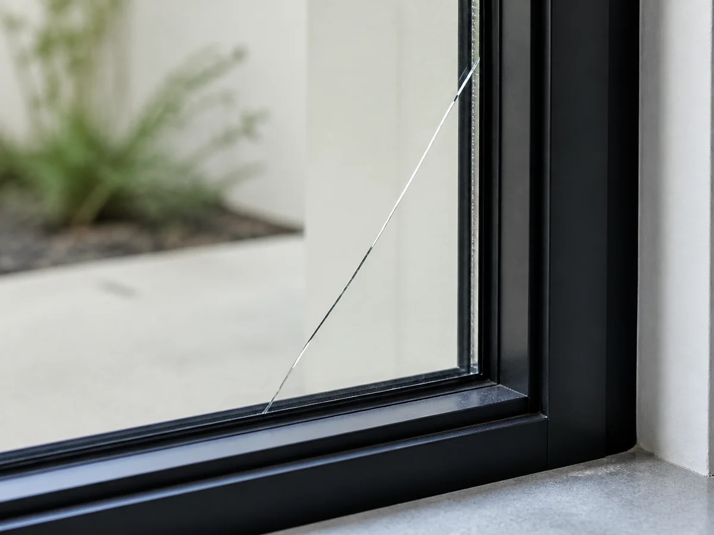
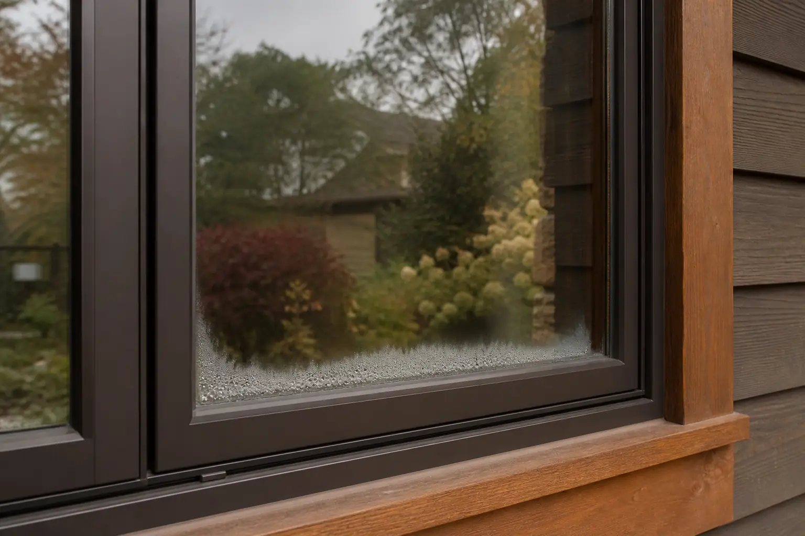
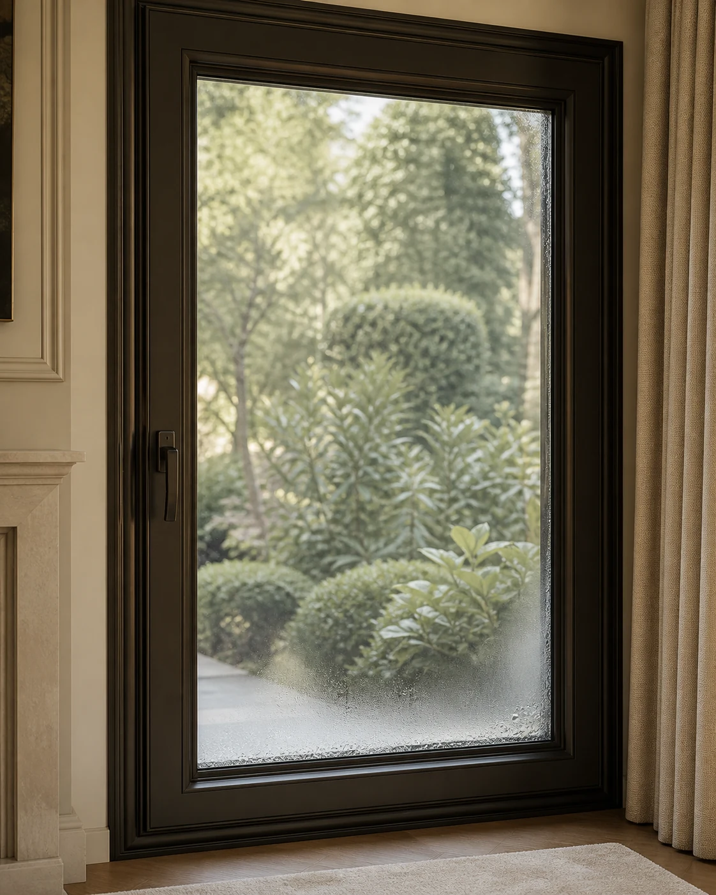
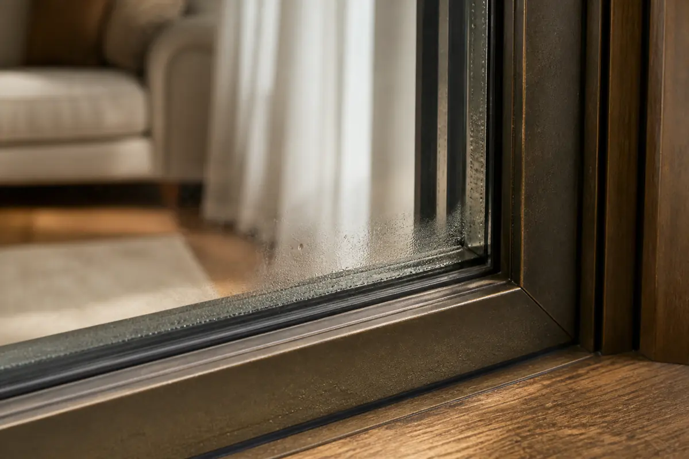

Single-pane glass replacement
A single glazing panel can have different sizing and retention requirements.
Cracks, haze and moisture can have different causes depending on where they appear. Share clear photos and describe whether the issue is on the surface, between panes or around the frame. Window Match may introduce the request to relevant independent local providers.
Describe the glass or seal issue
Haze trapped inside an insulated glass unit may indicate seal failure.
Note the size, location and whether the damage is spreading.
Moisture on the room-side or exterior surface may relate to humidity and temperature conditions.
Staining or dampness should be documented from inside and outside when safely possible.
Putty, gaskets, stops or seals may show age or separation.
Changes in clarity may affect only the glass unit rather than the full frame.

Pane construction, damage location and moisture patterns help clarify the right glass or seal conversation.

Accurate measurements and unusual shapes can influence the glazing scope.
The existing assembly determines the type of replacement being considered.
Opening location and local rules may influence material selection.
The surrounding assembly may need inspection before glass work is planned.
Appearance, coatings and patterns can affect the suitable options.
Floor level, handling and removal conditions are part of a complete scope.
Glass selection and safety requirements depend on the opening and local rules. A qualified provider must inspect, measure and quote the project.
Explain where the moisture, damage or failed seal appears so an interested independent provider can understand the glazing concern.